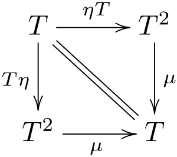
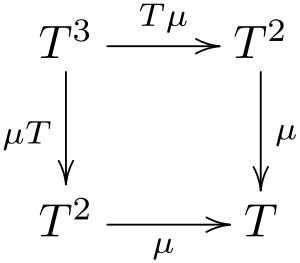

Haskell és matematika. És az én viszonyom hozzájuk.
Tömören: persze érdekel a matematika a maga saját önálló okán is, valójában azonban eredetileg a fizika volt az ami vonzott, a Haskell és a matematika inkább járulékosan jött. A fizika — Isten számítógépe, a matematika meg az ehhez való programnyelve. A Haskell előnye, hogy — nagyon helyesen — megpróbál ezekhez legalább közelíteni szellemiségben. Ehhez képes minden más az mellékes — piaci helyzet, vagy hogy egyáltalán hogy valami működik-e a hétköznapi életben.
Gyakorlatiasabbra fordítva a szót, két érdekes kérdést emelnék ki, amik hosszabban megfogtak:
A „Haskell-UML” kérdésre a Quora-n vagy a SO-n azt a félig vicces választ olvastam, hogy „persze, létezik a Haskell-világban is UML, úgy hívják, hogy »kommutatív diagram«.” Más hasonló szellemben született válaszok ennél is tágabban felelnek, miszerint maga a matematika a Haskell-UML, illetve maga a kategóriaelmélet egésze, továbbá Conal Elliot komoly hangvételű válasza pedig az Agda/Coq családot, illetve a Matrin-Löf típuselméletet említette. A dologban minden vicces szándéktól függetlenül valószínűleg a tényleges igazság rejtőzik, bár a kategóriaelmélet ebben nem egyetlen bölcsek köve, mert a topológia és a (Martin-Löf) típuselmélet, illetve az intuicionista logika legalább ilyen fontos szerepet tölt be, és valószínűleg ezek sem egyedülállóak ebben, a téma valószínűleg meglehetősen nyitott az alapkutatások felé.
A monász-transzformálók által nyújtott „lazy coupling” meghaladása terén egyetlen régi emlékem van, Wouter Swierstra „Why attribute grammars matter” cikkének az elolvasása, és felületes kipróbálása az akkoriban még háttérbe nem szorult UUAGC compileren. A dolgot mélyebben igazából nem, csak felületetesen értettem már akkoriban is, mára pedig nagyrészt elfelejtettem. A lényeg, hogy az attribútumnyelvtanok képesek olyan funkcionális „kötőanyagot” nyújtani, amellyel szinte az aspektusorientált programozás eredeti vízióinak megfelelő teljes szétválasztása érhető el a programok egyes aspektusainak. Mindenesetre akármi is van, a végső igazság valószínűleg mindeképp az lehet, hogy a matematika és annak modernebb alapkutatásai lehetnek képesek olyan fajta teljes lazy coupling-ot nyújtani, amire önmagában a Haskell sem képes, de ami víziója, szemelélete révén a programozás egészét húzni, vezetni tudja.
Az alábbiakban leírom, mi is vonz engem mostanában a topológiában, amelyet sajnos teljesen elhanyagoltam, és újra kellene tanulnom.
Topológiában: a lezárási operátorra vonatkozó tételek, amelyek épp a monászokra vonatkozó szabályokként is értelmezhetőek:
E tételek precíz bizonyítása, ha nem is triviális, de a könnyebbek közé tartozik. Ami még fontos, hogy a szemlélet, — mégha néha tán hamis biztonságérzetet is adva — de szintén képes valamelyest vezetni az embert. „A nyílt halmaz nem más, mint valamiféle hámozott gyümölcs. A zárt halmaz a hámozatlan eredetije. »Általános« halmazon pedig rajta lehetnek foltokban hámozatlan héjcafatok”. A lezárási operátor nem más, mint a héj „visszavarázsolása”, vagyis a hámozott vagy részleges, általánosan cafatos gyümölcsből visszaképezni az elképzelhető „hámozatlan eredetijüket”.
A formális bizonyítás persze ennél összetettebb, de az sem nehéz. Néhány segédtétel: pont környezetének fogalmát vehetjük „a pontot tartalmazó nyílt halmaznak”, mert a következmények ugyanazok maradnak, továbbá a lezárt fogalmánál lehet az egyszerűbb felépítésű definíciót használni (Kolmogorov & Fomin: FüggvElm-FunkAl, Def.2.5.1): egy \(P\) pont pontosan akkor tartozik egy \(A\) halmaz \(\text c A\) lezártjához, ha a \(P\) pont minden egyes környezete belemetsz (valamennyit) az (eredeti) \(A\) halmazba (másszóval egyik környezete sem diszjunkt tőle).
Ezzel pl. éppen az első tétel máris könnyen bizonyítható: \(A \subset \text cA\), hiszen \(\forall P \in A\ \bullet P \in \text c A\), azaz \(A\) bármely pontja szükségszerűen \(\text cA\) pontja is, hisz \(P\) tetszőleges környezete tartalmazza magát \(P\)-t is, ami épp a kiinduló feltétel alapján eleme \(A\)-nak, így valóban szükségszerűen \(P\) minden környezetének legalább egy közös pontja biztos lesz \(A\)-val, mégpedig legalább maga \(P\).
A többi tétel bizonyítása kicsit több lépésből áll, de jellegében hasonló és nem sokkal nehezebb.
Ehhez képest persze nem tekinthető bizonyításnak a „bőrős gyümölcs” szemlélete, de bármennyire is ingatag az efféle szemlélet a formális bizonyításhoz képest, de az előbbi három tételnek legalább a puszta megjegyezhetőségét megkönnyíti:
Az egész persze azért érdekes itt, mert a fenti három összefüggésnek kézenfekvőnek látszanak az analóg megfelelői a funkcionális programozás monász-fogalmának terén is:
return :: Monad m => a -> m a
fmap :: Functor f => (a -> b) -> f a -> f b
join :: Monad m => m (m a) -> m a
return = flip (:) [] -- (: [])
fmap f = foldr ((:) . f) []
join = concat
A Haskell-kód alapján a fmap enyhén kilógni látszik a sorból: őt nem a Monad, hanem a Functor típusosztály deklarálja:
class Functor f where
fmap :: (a -> b) -> f a -> f b
class Applicative m => Monad m where
return :: a -> m a
join :: m (m a) -> m a


Mivel a Monad (közvetett) örököse is a Functor-nak, ezért ez a „különállás” inkább csak valamiféle fokozati jellegű minőségnek tűnik. Aki azonban ismeri a monászok fogalmát a „tiszta” kategóriaelméletből is, az tudja, hogy a fmap (és a hozzá tartozó „monotonitás”-összefüggés) ott egész más minőségben jelenik meg, mint a return és join által képviselt „kiterjesztési” és „idempontencia”-összefüggés: az elébbi az a funktorokra, az utóbbi kettő pedig az \(\eta\) és \(\mu\) ún. természetes leképezésre vonatkozik; és a „funktor” vs „természetes leképezés” fogalom egész különböző absztrakciós szinten helyezkedik el. (A kommutatív diagrampár képéért köszönet: Wikipedia — Smimram és Sgnb és Greatfermat)
| Lezárás | Belsőrész | ||
|---|---|---|---|
| Kiterj. / Leszűk. | \(A \subset \text cA\) | \(\text{int} A \subset A\) | — duális párként |
| Idempotencia | \(\text c(\text cA) \subset \text cA\) | \(\text{int} A \subset \text{int} (\text{int} A)\) | — duális párként |
| Monotonitás | \(A \subset B \to \text cA \subset \text cB\) | \(A \subset B \to \text{int} A \subset \text{int} B\) | — itt nincs dualitás! |
A ko-monász fogalma nemcsak kategóriaelméleti fogalom: a programozásban — miként a monászok is, — a komonász fogalma is megjelenik:
class Functor f where
fmap :: (a -> b) -> f a -> f b
class Functor w => Comonad w where
extract :: w a -> a
duplicate :: w (w a) -> w a
| Control.Comonad |
|
Egyetlen szóval összegezve azt, amit mind a fentiekben mutatni akartam: a kategóriaelmélet mellett a topológia is képes elmélyíteni a funkcionális programozással kapcsolatos tudást, sőt a topológia itt nemcsak „a kategóriaelmélet szolgálólánya” szerény szerepében (konkrét példák, fogalomalkotások mögötti motivációk) puszta felmutatásában tölti be szerepét, de képes közvetlenül is megvilágítani programozási fogalmakat, illetve az azokban meglátandó finomabb alaptételeket.
A másik tanulság számomra:
„Hajóznimatematikát tanulni szükséges”
mert a szemléletformáló és a vziót vezető szerepe nélkülözhetetlen. A Haskell nem olyan erős, mint a matematika, de a matematika segít felismerni, hogy a Haskell meglévő erejét mindezzel együtt is meg tudjuk becsülni, és a további perspektívákban is segít.
{kind=link}
{kind=link}